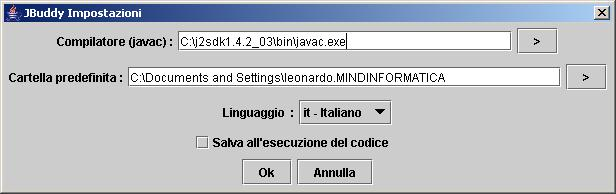

Configurazione
Prima di iniziare a usare JBuddy devi configurarlo.
Dal menu Modifica seleziona Preferenze
Si aprirà una finestra simile a questa

- Nella casella di testo accanto alla scritta Compilatore
devi inserire la path completa al file "javac.exe" (windows) oppure
"java" (linux). Puoi selezionare graficamente il file cliccando
sul pulsante alla destra della casella di testo
- Nella casella di testo accanto alla scritta Cartella Predefinita
puoi inserire il percorso della tua directory predefinita di lavoro.
Puoi cercare graficamente la directory cliccando
sul pulsante alla destra della casella di testo
- Seleziona la tua lingua preferita dalla casella a scelta
multipla Linguaggio
- La casella Salva all'esecuzione del codice, se attivata,
configura il programma in modo tale da salvare il tuo codice
prima di ogni esecuzione
Complimenti! Hai appena finito di configurare JBuddy!